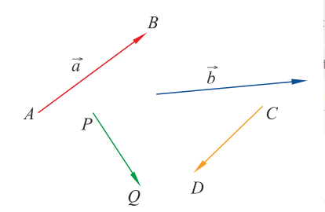
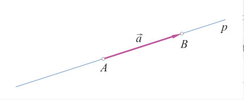
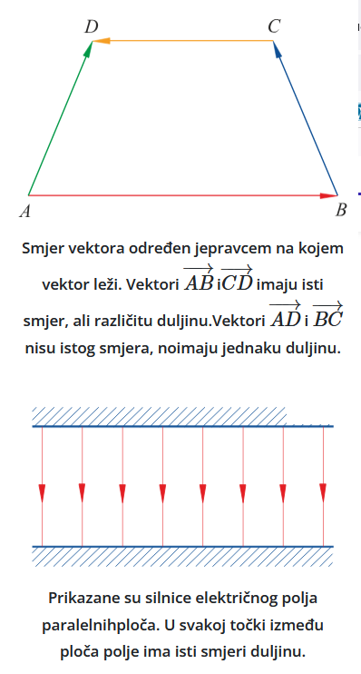
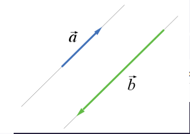
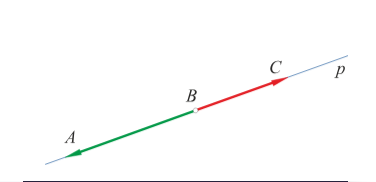
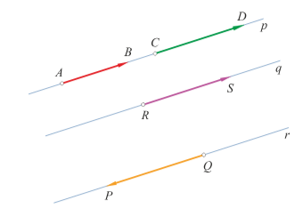
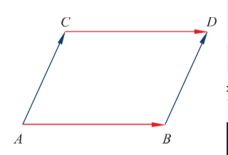
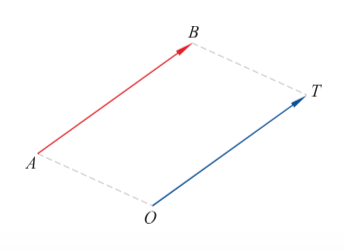
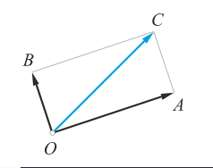
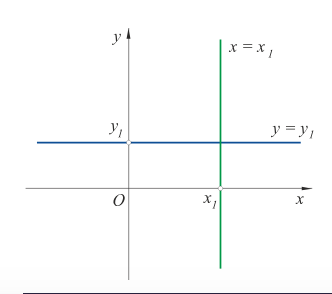

Osnovni pojmovi o vektorima

• Vektor (lat. vector - nositelj)
• usmjerena dužina (AB→) u kojoj razlikujemo početnu točku (hvatište (A)) i završnu točku (kraj (B)).
• crtamo ga poput obične dužine, s tim da je završna točka označena strelicom. (SLIKA 1)
• možemo ga označavati ili zapisom točaka koje omeđuje (s AB→, CD→,) ili izmišljenim malim slovom (a→,b→)
• skup svih vektora čije se početna i završna točka nalazi u jednoj ravnini označavamo s V2


• Vektor je određen ako poznajemo njegovu duljinu, smjer i orijentaciju.
• Duljina vektora a→=AB→
• udaljenost između njegove početne i završne točke (duljina dužine AB).
• označavamo je s |a→| ili |AB→|. (SLIKA 2)
• Smjer vektora.
• Njime opisujemo kada je pravac p nositelj vektora AB→/ pravac p prolazi točkama A i B vektora AB→ (SLIKA 3)
• Vektori koji se nalaze na pravcima paralelnim s pravcem na kojem se nalazi vektor koji promatramo kažemo da vektori imaju isti smjer/ da su kolinearni. (SLIKA 4)
•U suprotnom slučaju govorimo o nekolinearnim vektorima.



• Orijentacija vektora.
• Određivanje orijentacije
• Nacrtajmo pravac p i izdvojimo na njemu tri točke (A,B,C) (SLIKA 5).
Iz toga vidimo kako su vektori AB→, AC→, BC→, CB→, BA→ i CA→ iste orijentacije.
Međutim, vektori BA→ i BC→ suprotne su orijentacije.
• Prijenos orijentacije na vektore istog smjera
• Nacrtajmo 3 pravca i označimo vektore AB→, CD→, RS→ i OP→
• Prema slici, vektori AB→ i RS→ istog su smjera i orijentacije
• vektori AB→ i QP→ istog su smjera, ali suprotne orijentacije.
• Određenost i jednakost vektora
• Vektor je određen ako mu znamo duljinu, smjer i orijentaciju.
• Dva su vektora jednaka ako se podudaraju po duljini, smjeru i orijentaciji


• Vektori čiji je nositelj isti jednaki su kad imaju istu duljinu i orijentaciju.
• Ukoliko se pravci između dvaju vektora razlikuju: onda vektori AB→ i CD→ jednaki samo ako je četverokut ABDC paralelogram.
• ako je četverokut ABDC paralelogram, tada vrijedi da su dužine AB I CD iste duljine i paralelne, a orijentacije vektora identične. (SLIKA 7)
• ako je AB→=CD→, tada su u četverokutu ABDC dvije nasuprotne stranice paralelne i jednake duljine, što je dovoljno da bi on bio paralelogram.
• Za svaki vektor možemo odrediti njemu jednak vektor koji ima početak u unaprijed zadanoj točki O (radijus vektor).
• Odaberimo neki vektor AB→ i označimo točku O.
• Postoji samo jedna točka T takva da je OTBA paralelogram. Onda je OT→=AB→. (SLIKA 8)
• Suprotni vektori
• dva vektora koji imaju istu duljinu i smjer, a suprotnu orijentaciju.
• Suprotan vektor vektoru a→ označavamo −a→.
• Vektor suprotan vektoru AB→ je BA→, jer taj vektor ima isti iznos i smjer, a suprotnu orijentaciju(-AB→=BA→)
• Nul vektor
• Vektor kojem se podudaraju početna i završna točka označavamo s 0→.
• Njegova je duljina 0, i vrijedi 0→=−−AA→ za bilo koju točku A.
• Prema dogovoru uzimamo da je nul-vektor kolinearan sa svakim vektorom.
Zbrajanje vektora

• Zbroj dvaju vektora - Pravilo paralelograma
• Zbroj vektora OA→ i OB→ s istim početkom O je vektor OC→ takav da je OC dijagonala paralelograma OACB.
• (OC−→−=OA−→−+OB−→−. (SLIKA 3))


• Zbroj vektora- Pravilo trokuta
• Vektori a→ i b→ ulančani su ako se završetak prvog podudara s početkom drugog.
• Zbroj dvaju ulančanih vektora AB→ i BC→ je vektor AC→ koji spaja početnu točku prvog vektora sa završnom točkom drugog vektora. (SLIKA 6)
• Izvedba (SLIKA 5)
• Označimo početnu točku vektora a→ s O.
• Neka je A njegova završna točka, zbog koje Izaberemo vektor OB→ jednak vektoru b→ . (SLIKA 4)
• Zbrojimo vektore OA→ i OB→, čime dobijemo zbroj vektor c→ =OC→.
• Kako se vektori OB→ i b→ podudaraju, vrijedi c→ =OC→=OA→+OB→=a→ +b→ .
Zbrajanje vektora možemo opisati na još jedan način. Pogledajmo sliku. (SLIKA 5)
Neka su a⃗ i b⃗ bilo koja dva vektora. Označimo početnu točku vektora a⃗ s A, a završnu s B.
Dakle, a⃗ =AB−→−. Izaberimo vektor AD−→− jednak vektoru b⃗ . Nacrtajmo paralelogram ABCD. Po pravilu paralelograma za zbrajanje dvaju vektora jea⃗ +b⃗ =AB−→−+AD−→−=AC−→−.
Međutim, vektori AD−→− i BC−→− su jednaki, b⃗ =AD−→−=BC−→−. To znači da se zbroj dvaju vektora može dobiti i na ovaj način:a⃗ +b⃗ =AC−→−=AB−→−+BC−→−.
Primijetimo da smo tu izabrali dva vektora, AB−→− i BC−→−
tako da se završetak jednog podudara s početkom drugog vektora. Za takve vektore kažemo da su ulančaniili da se nadovezuju.

Realne brojeve a i b možemo zbrajati u bilo kojem poretku, jer vrijedi a+b=b+a. Isto svojstvo ima i operacija zbrajanja vektora, jer se po pravilu paralelograma zbrojevi a⃗ +b⃗ i b⃗ +a⃗ računaju na isti način.
Eksplicitni i implicitni oblik jednadžbe pravca
• Pravac (u koordinatnom sustavu)
• skup svih točaka (x,y) u ravnini čije koordinate zadovoljavaju jednadžbu Ax+By+C=0, pri čemu je barem jedan od koeficijenata A, B različit od nule
• jednadžba oblika Ax+By+C=0 nazivamo implicitni oblik jednadžbe pravca.
• Pravac crtamo tako da odredimo barem dvije točke koje leže na tom pravcu, uzimajući po volji dvije vrijednosti za nepoznanicu x ili nepoznanicu y.

• Slučajevi (SLIKA 1)
• Ako je u općoj jednadžbi pravca A=0, onda proizlazi: By+C=0.
• jednadžbu zadovoljavaju točke (x,y) ravnine za koje vrijedi y=−CB.
• Te se točke nalaze na pravcu koji prolazi točkom (0,−CB) i paralelan je s osi apscisa (x).
• Ako je u općoj jednadžbi B=0, onda proizlazi: Ax+C=0.
jednadžbu zadovoljavaju točke (x,y) ravnine za koje vrijedi x=−CA.
Te se točke nalaze na pravcu koji prolazi točkom (−CA,0) i paralelan je s osi ordinata.
• Eksplicitni oblik jednadžbe pravca
• Postiže se ukoliko pravac nije paralelan s osi ordinata,
• Ako je B≠0, jednadžbu Ax+By+C=0 dijeljenjem s koeficijentom B prevodimo u jednadžbu oblika
• Koeficijent k zovemo nagib/koeficijent smjera i može biti bilo koji realni broj.
• ako je k=0, jednadžba (y=l) je paralelna s osi apscisa
• Koeficijent l nazivamo odsječak na osi ordinata.
• ako je x=0, pravac jednadžbe (y=k*0+l=l) prolazi točkom (0,l), a ako je l=0, prolazi ishodištem